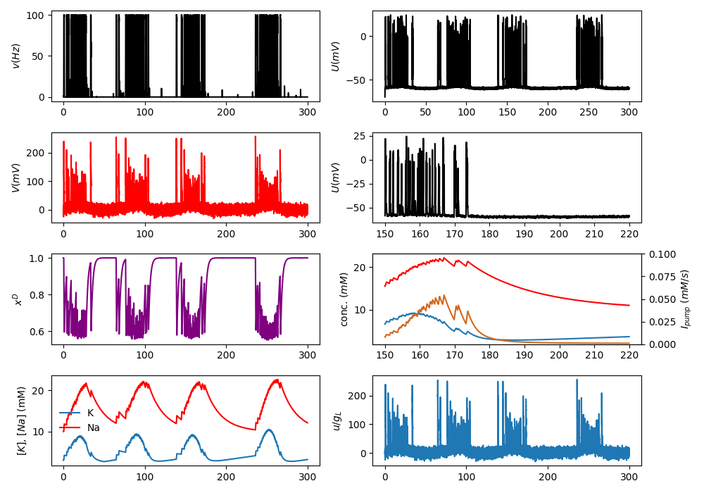

This is the readme for the models associated with the paper
Chizhov AV, Zefirov AV, Amakhin DV, Smirnova EY, Zaitsev AV (2018)
Minimal model of interictal and ictal discharges "Epileptor-2". PLoS
Comput Biol 14:e1006186
doi: 10.1371/journal.pcbi.1006186
This model entry was contributed by AV Chizhov.
This excerpt from the paper provides some specifics. Although the drive.google.com links are broken the model code is available in this modeldb entry:
"The simulations were performed in the Delphi-7 environment. The
mathematical analysis of the stochastic oscillations was performed
using Wolfram Mathematica 10 (Champaign, IL, USA). The Euler-Maruyama
explicit numerical scheme was applied for the integration of the
stochastic ordinary differential equations. The typical value of a
time step was 0.5 ms. The results were dependent on the numerical
parameter in a similar extent as for different realizations of
noise. The numerical realizations of the model are available from the
websites: the code in Wolfram Mathematica is at
https://yadi.sk/d/927UjbS-3QQhMW; the code and executive file in
Delphi-Pascal are at https://drive.google.com/file/d/1AJhAFKLOjvgauBF_6SQzvol8zzmfMaDV/view?usp=sharing
and
https://drive.google.com/open?id=10ij-Nt780jROcMv9qniUm4rAJNr8WD2j" ,
correspondingly."
Python and JavaScript versions of Epileptor-2 are also available under the subfolders of the same name.
The JavaScript version (available in the html file) produces the following after this archive is downloaded, extracted, and the html file is loaded into a browser (will not run from ModelDB):
The python (verified in Python 3.6.9) version produces the following graphs
The code has been originally written by me (AV Chizhov) in Delphi. It was later re-implemented in Python by Artyom Zefirov, in Wolfram Mathematica by Dmitry Amakhin, and in Javascript by me.
20200514 update from AV Chizhov to provide corrected Python file.